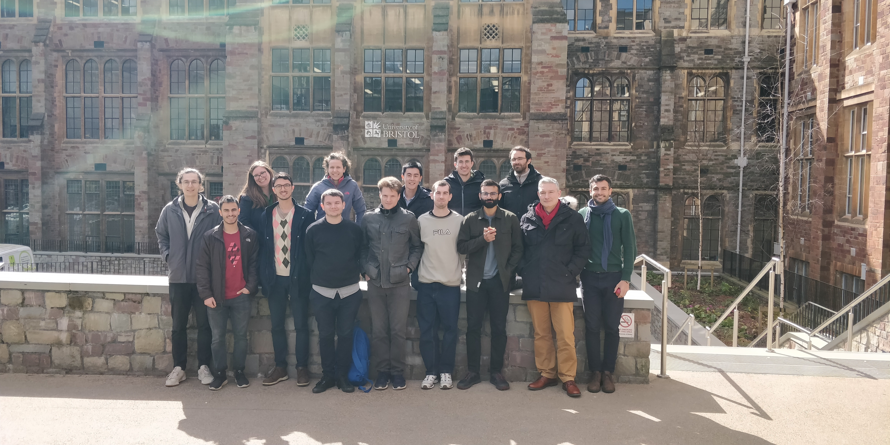

TThe CoSInES-Bayes4Health Masterclass on Variational Inference was hosted at the MRC Biostatistics Unit, University of Cambridge, from the 7th to the 10th of November, 2022. This event was the second in the series, after the successful Masterclass on Sequential Monte Carlo in March-April 2022, and continued in the spirit of sharing knowledge and encouraging collaboration between early-career researchers affiliated with the grants. This workshop expanded slightly from the previous Masterclass in terms of both length (4 days) and attendance (30 attendees, with some of them attending online). Additionally, due to the main topic of the workshop, many of the lectures were delivered by early-career researchers from outside of the grant, spanning groups in Cambridge, UCL, Oxford, and the CNRS in Paris. The organisation of the event was again led by Filippo Pagani, assisted closely by Francesca Crucinio, Andi Wang and Sam Power. Local organisation was aided by Alison Quenault and Sharon Dippenaar. The high-level research programme for the workshop was developed collaboratively by Sanmitra Ghosh, Hélène Ruffieux, and Deniz Akyildiz. The lectures themselves were planned and delivered by Hélène Ruffieux, Camilla Lingjaerde, Sanmitra Ghosh, Tui Nolan (all Cambridge), Kamélia Daudel (Oxford), and Badr-Eddine Chérief-Abdellatif (CNRS). Additionally, more advanced research-level seminars were presented by Jeremias Knoblauch (UCL) and Rob Cornish (Oxford). The event was again well-received by the audience, who praised the high quality and interactivity of the tutorial presentations, as well as the freedom provided by the schedule for interaction between attendees outside of lectures. Planning for the next instalment of the Masterclass series is already underway, and is eagerly anticipated by many.
The CoSInES-Bayes4Health Masterclass on Sequential Monte Carlo was hosted at the University of Bristol from the 30th of March to the 1st of April, 2022. The idea was proposed in October 2021, in the aftermath of the Warwick Methodology Week, as an initiative to share knowledge and encourage collaboration among the members of the grants, with a particular focus on postdocs. The 3-day long event featured introductory sessions on Sequential Monte Carlo and related topics by Deniz Akyildiz, Alice Corbella, Francesca Crucinio, Sam Power, and Lorenzo Rimella and more advanced lectures on research topics in the area, given by the PIs Christophe Andrieu, Adam Johansen, and Anthony Lee.
Connor Duffin, Edward Cripps, Thomas Stemler and Mark Girolami have recently published in PNAS, their paper entitled Statistical finite elements for misspecified models. Science and engineering have benefited greatly from the ability of finite element methods (FEMs) to simulate nonlinear, time-dependent complex systems. The recent advent of extensive data collection from such complex systems now raises the question of how to systematically incorporate these data into finite element models, consistently updating the solution in the face of mathematical model misspecification with physical reality. This article describes general and widely applicable methodology for the coherent synthesis of data with FEM models, providing a data-driven probability distribution that captures all sources of uncertainty in the pairing of FEM with measurements.
Augustin Chevallier, Paul Farnhead and Matthew Sutton have recently published on Arxiv, their paper entitled Reversible Jump PDMP Samplers for Variable Selection. This paper looks at how to extend recent PDMP samplers to model choice problems, and in particular variable selection. It gives a general recipe for adding appropriate reversible jump moves which allow exploration of different models by adding or removing variables from the model.
From 7-10 January 2020 the biannual ISBA meeting on Bayesian Computation (BayesComp) was held at the University of Florida, Gainsville, organised by Jim Hobert and colleagues. The meeting was particularly well-attended by members of the CoSInES project. A list of CoSInES-affiliated attendees includes: PIs Prof. Gareth Roberts, Prof. Christophe Andrieu, Prof. Paul Fearnhead and Dr. Anthony Lee who all gave talks, and research associates Dr. Augustin Chevalier, Dr. Lionel Riou-Durand and Dr. Andi Wang who all presented posters. Overarching scientific themes from the meeting included the analysis of computational Bayesian methods in high-dimensional settings, study of nonreversible sampling methods and the study of robustness and approximate methods. A notable presentation was the opening plenary talk, given by CoSInES PI Prof. Paul Fearnhead on ‘Continuous-time MCMC’, focusing on the Zig-Zag Sampler and related developments. The location was particularly pleasant; the days were sunny and relatively warm (despite being winter in Florida), and the meeting was held in the beautiful University of Florida campus, with a large lake (home to alligators, though none were spotted) and within easy walking distance of the lively Gainesville town centre.
The paper The Scalable Langevin Exact Algorithm: Bayesian Inference for Big Data (SCaLE) by Murray Pollock, and CoSInES investigators Paul Fearnhead, Adam Johansen, and Gareth Roberts has been accepted as a JRSSB read paper, and will be presented at the Royal Statistical Society on 22nd April 2020. A working version of the paper is available here, and further event details will be added when available.
Cambridge University Press has today announced its new Journal of Data Centric Engineering. The journal is accepting submissions from statisticians working in any aspect of the engineering sciences.
The first workshop for the CoSInES and Bayes4Health research projects will be held at the University of Lancaster from Monday 16th to Thursday 19th September 2019. Find more details at the workshop website.
The CoSInES opening workshop will be held at the University of Warwick on 2nd November 2019. We have an excellent program of speakers, and encourage anyone interested in the program to attend.